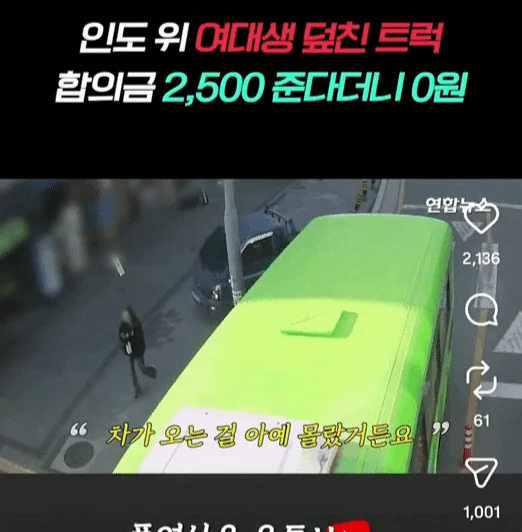
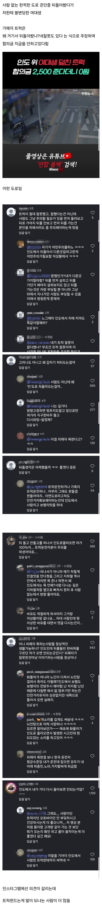

인도 사고인데 피해자를 왜욕함


인도 사고인데 피해자를 왜욕함
왜 반응이 갈리지 트럭편드는 놈들은 대가리가 갈렸나?
인스타에 저렇게 반응 갈리는 댓글은 거진 중국인임 ㅋㅋㅋ
트럭 옹호하는 병신들은 편부모나 고아새끼들인가
사람이 서있다가 돌아서는게 조심해야되나? 뭐 폰으로 셀카모드켜서 후방확인하고돌아야됨?
트럭에 치여서 이세계 갔다가 고블린한테 따이고 절정올라 다시 돌아온 기저귀 현생 사는 븅신들이 꽤 많네?
트럭찬양 하는거 보니 다시 고블린 맛도리 느끼러 돌아가고 싶나 보다.
인도에 서있는 사람이 인도위로 차가 올거까지 생각할필요는 없음
우와.. 댓글 다 읽어보려다가 포기 ㄷㄷ
한국 운전문화가 아무리 씹창나도그렇지
저기서 보행자 잘못이 1%라도 있다고 생각하는새끼들은 접시물에 코박고 자살하도록
와...댓글보니
진짜 이상한친구들이많구나....ㅋㅋㅋㅋ
국평오!!
휙 돌아서 만에하나 부딫히면 사람이든가 해야지 트럭인건 너무 심하잖아;;
방금 지나온 인도에서 내뒤에 달리는 트럭이 있을까 조심해서 뒤도는 사람이 어딨냐고ㅋㅋㅋㅋㅋ
인스타에 보면 저런 애들 많은데
거진 중국인들이니깐 화낼 필요 없이 무시하면 됨
깔리지 않아서 그나마 다행이네
자전거 보행자겸행 도로나 자전거전용도로에 저런사람 수두룩함. 뭔가 옆으로돌때 최소한 시야확보좀 하고 움직이면 좋겟음.
차 소리가 가까이 들리니까 돌아보지. 개소리들 하고있네.
"인도" 에서 사고면 차 100이지
저건 운전자중과실이라 보험도안되지않음?